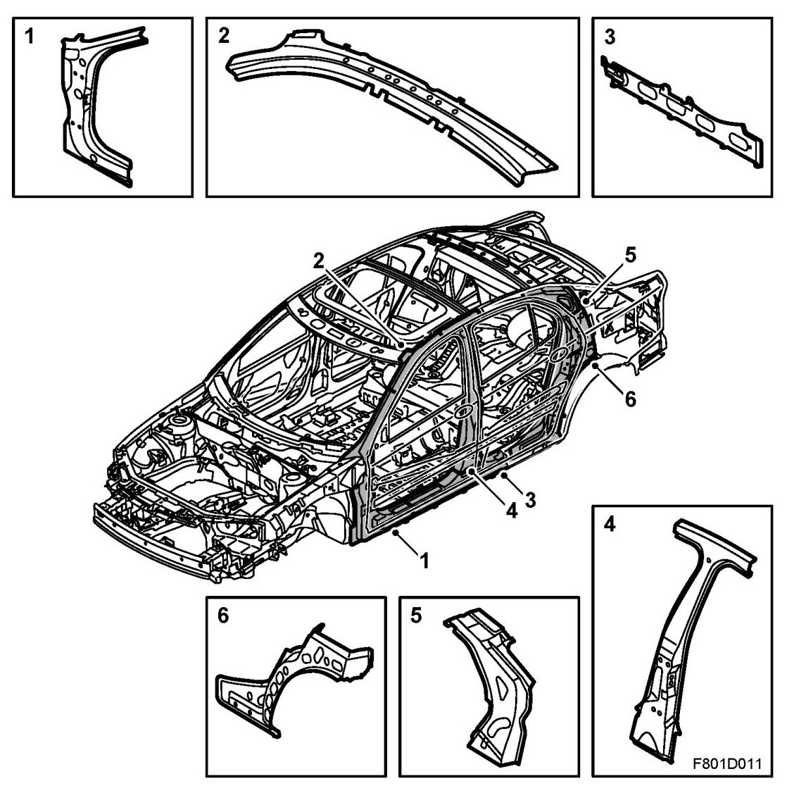

Body Reinforcements, 4D
Body Reinforcements, 4D

The body is reinforced in the areas that are most vulnerable in the event of a collision. Some of these reinforcements are manufactured with high-strength steel.
1. Lower section of A-pillar
2. Upper section of A-pillar
3. Sill
4. B-pillar
5. Upper part of wheel housing
6. Lower part of wheel housing
IMPORTANT: Body reinforcements may only be cut and spliced if this is specified in the method description. Unless otherwise specified, a damaged reinforcement must without exception be replaced with a new one.